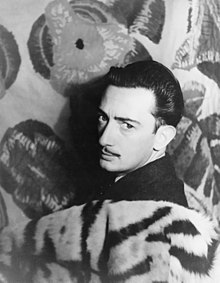

Biografía
Si bien parte del inmenso prestigio y popularidad de que gozó ya en vida se debió a sus estrafalarias e impostadas excentricidades, Salvador Dalí acertó a insuflar nueva vida al surrealismo europeo hasta convertirse en su más conocido representante; sus confusas ideas estéticas (el llamado método paranoico-crítico) fueron mucho menos decisivas que sus impactantes composiciones, a las que trasladó con magistral precisión técnica un personalísimo universo onírico y simbólico, tan nítido y luminoso como profundamente inquietante y perturbador.
Salvador Dalí nació en una madrugada de la primavera de 1904 en el seno de una familia burguesa, hijo de un notario bienpensante y de una sensible dama aficionada a los pájaros. Muchos años más tarde escribiría en su autobiografía La vida secreta de Salvador Dalí (1942): "A los tres años quería ser cocinero. A los cinco quería ser Napoleón. Mi ambición no ha hecho más que crecer y ahora es la de llegar a ser Salvador Dalí y nada más. Por otra parte, esto es muy difícil, ya que, a medida que me acerco a Salvador Dalí, él se aleja de mí".
Puesto que la persecución sería incesante y el objetivo no habría de alcanzarse nunca, y dado que en ningún recodo de su biografía estaba previsto que hallara el equilibrio y la paz, Dalí decidió ser excesivo en todo, interpretar numerosos personajes y sublimar su angustia en una pluralidad de delirios humorísticos y sórdidos. Se definió a sí mismo como "perverso polimorfo, rezagado y anarquizante", o "blando, débil y repulsivo", aunque para conquistar esta laboriosa imagen publicitaria antes hubo de salvar algunas pruebas iniciáticas, y si el juego favorito de su primera infancia era vestir el traje de rey, ya a los diez años, cuando se autorretrata como El niño enfermo, explora las ventajas de aparentar una constitución frágil y nerviosa.
Su precocidad es sorprendente: a los doce años descubre el estilo de los impresionistas franceses y se hace impresionista; a los catorce ya ha trabado conocimiento con el arte de Picasso y se ha hecho cubista, y a los quince se ha convertido en editor de la revista Studium, donde dibuja brillantes pastiches para la sección titulada "Los grandes maestros de la Pintura".